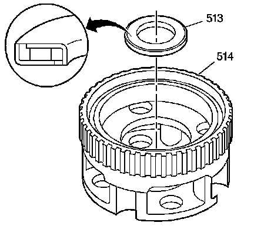
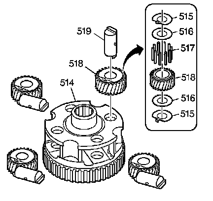
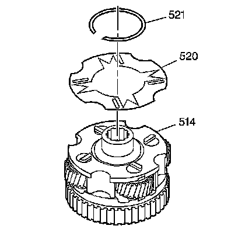

Overdrive Carrier Assembly Assemble
Overdrive Carrier Assembly Assemble
Tools Required
J 36850 Transjel(R) Lubricant

1. Install the overrun clutch housing thrust bearing assembly (513) into the overdrive carrier assembly (514). Retain with J 36850 or equivalent.

2. Install one overdrive carrier pinion gear (518) and its roller bearings (517) and thrust washers (515, 516), into the overdrive carrier assembly (514) at the location marked at disassembly.
3. Install the overdrive carrier pinion gear pin (519).
4. Repeat steps 2 and 3 until all 4 pinion gear assemblies are installed in their original locations.

5. Install the overdrive carrier pinion gear pin retainer (520) on the overdrive carrier assembly (514). Align the pinion gear pins with the retainer slots.
6. Install the overdrive carrier pinion gear pin retainer retaining ring (521) on the overdrive carrier assembly (514).